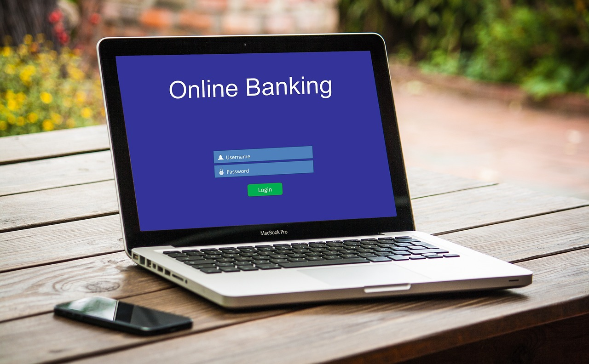
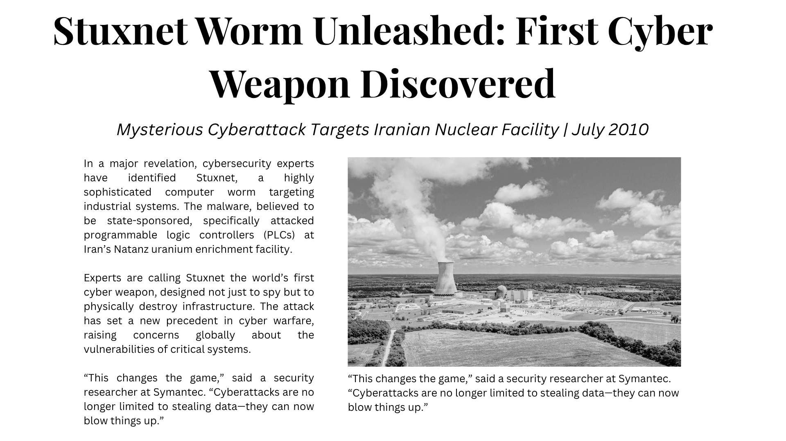

Cyber Threats II

Insider Threats
Insiders are those people who know the confidential internal information of the organization, IT system and security practices and can willingly or mistakenly misuse it. Insiders can be current or former employees, vendors with internal access, third party contractors or business partners. They have access to organization systems. Insiders are hard to detect as even trusted employees can come out as an insider.
There are different types of malicious insider attacks:
- Sabotage: Damage the organization systems and destroy data in it.
- Fraud: Criminal financial transactions
- Theft: Steal sensitive data
- Espionage: Steal data and give it to competitors
How to protect against Insider Threats
- Identify critical assets in an organization and ensure they are properly protected and monitored.
- Review and validate who has access to the critical assets.
- Implement proper policies for accessing the critical assets.
- Review employee performance.
- Implement Technical Security Controls.
- Follow the principle of least privilege.
Shadow IT
Shadow IT is the use of IT systems and software, such as hardware, software, web services, cloud applications, etc., without the knowledge or approval of IT leadership or stakeholder. It is the unauthorized use of systems, software, personal devices or cloud services by enterprise employees. For example, communicating with personal email accounts, using cloud storage and file sharing applications such as Dropbox or Google Drive, etc.

In organizations, shadow IT is driven by understaffed IT departments, perception that IT is too slow or restrictive and easy SaaS solutions such as Dropbox.
There are different risks in Shadow IT:
- Data Loss
- Unpatched vulnerabilities
- Lack of security compliance
- Lost control over applications
How to protect against Shadow IT:
- Enforce strong security policies.
- Limit the access to the network and follow the zero-trust model.
- Continuous monitor network and applications for security.
- Assess risks the applications can possess and evaluate the usage of them.
- Properly manage cloud applications.
Supply Chain Attack

When a product is made, then there is a chain of suppliers that deliver the product to the user or customer. If one of the suppliers is hacked, then the user and the entire chain can be vulnerable. This is called supply chain attack.
Software Supply Chain is the risk that open-source software may contain vulnerabilities or malicious code. Open-source software is the software which has publicly released source code to inspect, study and potentially suggest an improvement.
How to protect against Software Supply Chain attack:
- Conduct audits of software codes.
- Regularly update open-source software.
- Restrict the use of open-source software that hasn’t been used in years.
Advanced Persistent Threats (APTs)
APT (Advanced Persistent Threat) are highly sophisticated threats which can be characterized by being well-funded, with clear aim and involve highly skilled actors. Persistent means to target continuously for a long period of time. APTs may be sponsored by the government, an organization or hacktivists.
Characteristics of APTs:
- Sophisticated resources and highly skilled hackers
- Remain stealthy and unnoticed by operating slowly (long term operation)
- Targets a specific system
- Deployment is controlled by human rather than being fully automated
APTs are conducted by highly funded organizations like a state military. So, they often succeed. APTs are mainly operated for espionage or sabotage of operations of target institutions.

Stuxnet is a popular example of APT. It was a malware developed by the United States and Israel. Its goal was to sabotage Iran’s Natanz nuclear facility. This APT group figured out previously unknown windows vulnerabilities and exploited them. This is called zero-day exploits. It manipulated centrifuge speeds, causing physical damage to the facility.